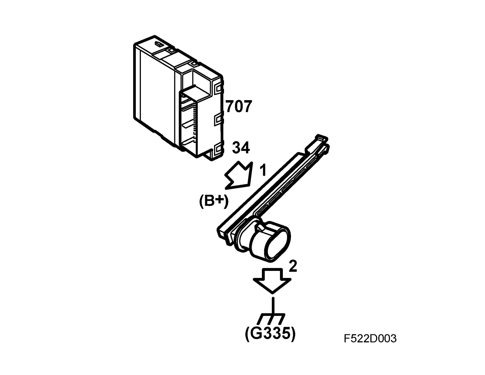
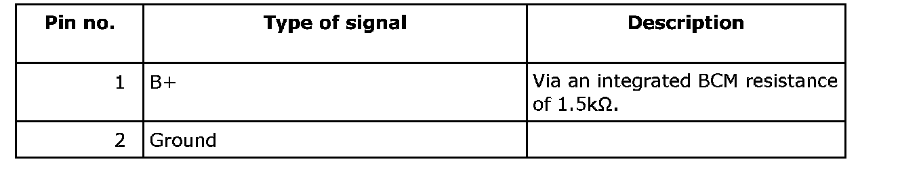
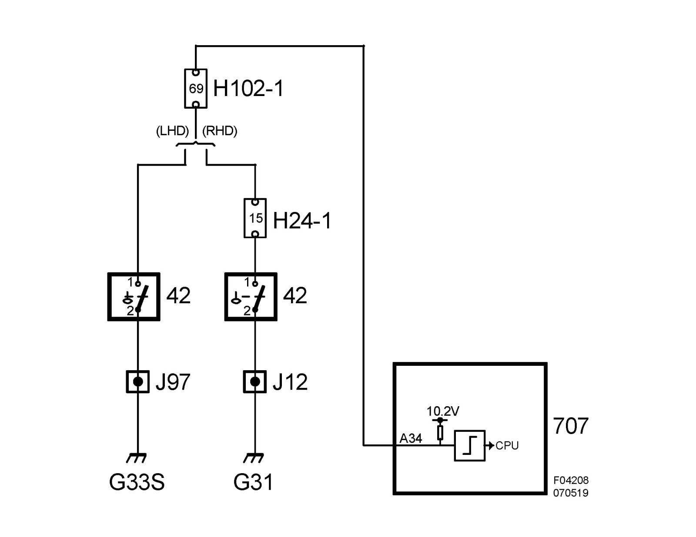

Brake Fluid Level Sensor/Switch: Description and Operation
Level switch, brake fluid (42)Location
Level switch, brake fluid (42)
Main use
Used to indicate low brake fluid with a value which informs the driver. The BCM sends switch status on the bus.
Type
The contact contains a single-pin reed element switch. The switch is actuated by a float with an integrated magnet in the reservoir. When the level is normal, the switch is open; when the level is too low, the switch closes.
Connection


Sensor pin 1 is connected to BCM pin A 34. Sensor pin 2 is grounded in grounding point G 31 via crimp J12. When the brake fluid level is low, the float sinks, whereby the ring magnet actuates the reed element which in turn completes the circuit.
The control module input is digital; voltage above 2V is determined to be an open circuit and lower than 2V is determined to be closed.
See connection to BCM.
